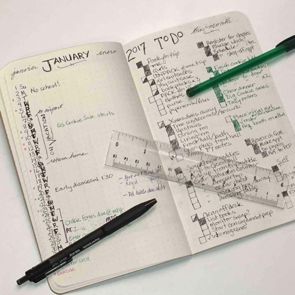

Conscious Parenting NI
Run the Week
Your planning kit for the days ahead.
The tools you open to plan and hold a week together — this week's feast, a day to model your own on, the whole resource library, and a quiet place to keep what you notice. None of it is a curriculum to obey; it's a kit to make your own days from.
This Week's Feast
Poem · hymn · painting · story · nature · practical
Daily Rhythm
Six real homeschool days. Pick one. Adapt it.

Resources
~70 vetted curricula, books, apps. Filterable.

Keeping
Narration · habit · diary · observations. Private.
Surprise me
A random activity from any tradition. Press for another.